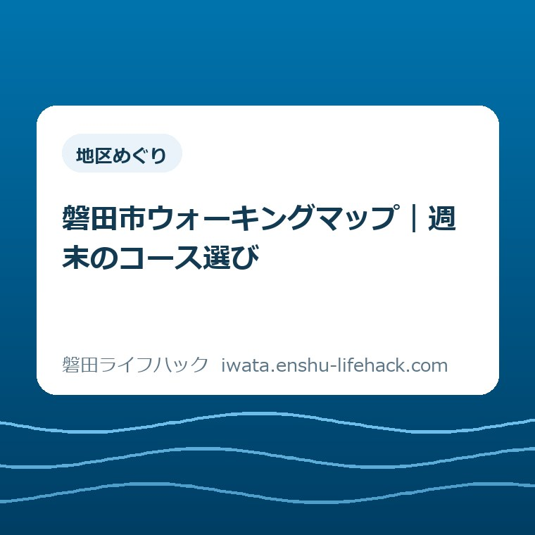
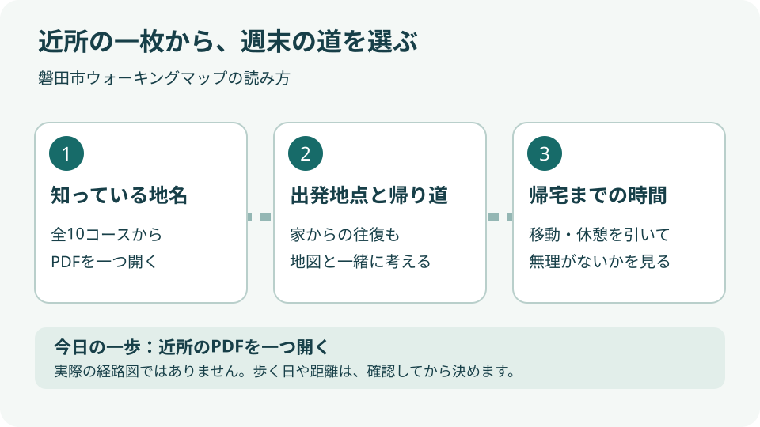
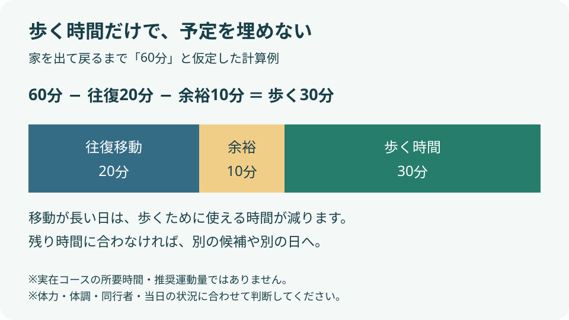

地区めぐり
磐田市ウォーキングマップ｜週末のコース選び

この記事の要点
Q. 家事や送迎の合間に、どのコースを選べばいい？
A. 磐田市公式「ウォーキングマップ」の添付ファイルから、近所のコースを一つ開きます。出発地点までの往復、歩く時間、休憩を分けて考え、体力や同行する子どもの様子に合うか確認してください。全10コースを比べ切る必要はありません。2026年9月26日～10月3日は初の健幸いわたWEEKですが、歩く日や距離を急いで決めず、最新情報は市公式ページで確かめましょう。
家事の合間に歩くなら、帰宅時刻から考える
家事や子どもの送迎を済ませてから歩こうとすると、靴を履く前の段取りだけで時間が過ぎます。食事の準備、洗濯、迎えの時刻を動かせない方もいるでしょう。歩く気持ちが足りないのではなく、すでに家族の予定を回している。その負担を出発点に、週末のコースを選ぶ記事です。
無理なく歩ける道は、体力、体調、同行者、使える時間で変わります。施設の利用条件や催しの参加条件も個別に異なります。この記事は運動量を指定するものではありません。市が用意した地図を、生活の予定に合わせて読む手順を整理します。公表情報の確認日は2026年9月25日です。
大石浩之（磐田市／不動産業）です。私は、歩く距離より先に、家へ戻れる時刻を決めるほうがよいと考えます。長いコースを選んで夕食や迎えを圧迫すれば、次の休日に同じ予定を入れにくくなります。今回は名所のランキングではなく、家から出て帰るまでが収まるかを物差しにします。
週末の候補は、まず一つで十分です。市の地図を開いてみて、出発地点まで遠いと分かれば、その発見にも意味があります。「今週は見送る」と判断できる地図の読み方まで含めて、使い方を考えます。
公式情報：全10コースと健幸いわたWEEKは別に読む
磐田市の「ウォーキングマップ」は、2026年3月20日更新のページです。市内全10地区・10コースを紹介し、コース別のPDFを公開しています。市は体力、住んでいる地域、コースの魅力に応じて選ぶことを案内しています。
少し意外なのは、市が紹介するのは指定の10コースだけではないことです。公式ページには、普段歩く道も自分のウォーキングコースになるという趣旨の案内があります。10コースを全部回ることを目標にしなくても、生活の中の道を見直す入口として使えます。
一方、市の「健幸いわたDAY＆WEEK」は、2026年9月7日更新です。2026年度から強化週間を設け、初回の期間を9月26日（土曜）～10月3日（土曜）としています。毎月1日の健幸いわたDAYに加わる取り組みです。
この二つのページは役割が違います。地図は歩く道を調べる資料、WEEKは健康づくりに意識を向ける機会です。10コースを期間内に歩く参加企画だとは読み取れません。催しに参加したい場合は、WEEKの公式ページにあるチラシで内容や条件を別に確かめてください。
地域から探す：添付ファイルの名前を手がかりにする
磐田市ウォーキングマップの使い方は、公式ページの「添付ファイル」を開き、近所の地名や施設名を探すところから始まります。表紙、コラム、目次に続いて、番号付きのコースPDFが並びます。スマホではページ下部まで進み、必要な一つを選びます。
コース名は次の10件です。表の名前は市の添付ファイル一覧に合わせました。番号は難易度やおすすめ順ではありません。この記事でも短い順には並べ替えていません。まず暮らしの中で場所が思い浮かぶ名前を一つ選ぶための一覧です。
| 番号 | コース名 |
|---|---|
| 1 | 敷地里山公園 |
| 2 | 鶴ケ池 |
| 3 | 天竜の渡船と新造形創造館 |
| 4 | 見付天神としっぺい |
| 5 | 安久路公園とひょうたん池 |
| 6 | 磐田香りの博物館と仿僧川 |
| 7 | 磐田駅大クスノキとジュビロード |
| 8 | 大池と静岡産業大学 |
| 9 | 別珍とコール天 |
| 10 | 竜洋海洋公園とエコパーク |
例えば見付という地名が日常の行動範囲に入るなら、4番を最初の候補にする選び方があります。磐田駅を使う生活なら7番、香りの博物館の位置が分かるなら6番から開く方法もあります。ただし、施設を知っていることと、コース全体を歩けることは別です。
PDFを開いたら、タイトルより先に出発地点と道のつながりを見ます。自宅からどこへ向かうのか、歩いたあとどこに戻るのかを指で追ってください。地図内の距離や所要時間の記載が読めたら、家族の予定と照らし合わせます。読めない文字は拡大し、推測で補わないのが基本です。
スマホで表示できたPDFは、使い慣れた方法で保存しておくと、出発前に探し直す手間を減らせます。ファイル名に番号が付いていれば、家族へ「4番を見て」と伝えやすくなります。保存した地図を使う日にも、公式ページの更新や現地の案内は確認してください。
冊子については、3月20日更新の市のページが交流センターや体育施設等へ4月以降順次配架する予定を案内しています。9月25日時点で各施設に何冊あるかは、この記事では確認できていません。紙で欲しい方は、受け取りに行く施設へ在庫を尋ねると空振りを減らせます。

時間と体力を照合する：地図の外にも時間がかかる
歩く予定を組むときは、コース上の時間だけでなく、自宅からの往復と休憩を別枠にします。地図に所要時間が載っていても、家庭ごとの移動や子どもの支度まで含むとは限りません。家を出られる時刻と、必ず戻りたい時刻を先に書くと、比較の基準ができます。
計算例として、家を出て戻るまで60分を使えると仮定します。出発地点までの往復に20分、休憩や準備の余裕に10分を置けば、歩くために使えるのは30分です。60－20－10＝30分という時間配分の例であり、市の特定コースの所要時間でも、勧める運動時間でもありません。
同じ仮の60分枠でも、往復が40分なら、余裕10分を引いた残りは10分になります。景色が魅力的でも移動に時間を使う日はあります。地図を二つ目へ切り替える前に、「家の近くから歩けないか」と考えると、候補を増やす作業そのものを減らせます。
体力については、地図の距離を達成目標にしないことを私は勧めます。いつもの外出と比べて長く感じる、帰り道まで歩けるか分からない。その場合は、全周を前提に予定を固めず、別の候補にするか、歩く日を見送る余地を残します。数字だけで「誰でも楽」とは判断できません。
途中まで歩く案を立てる場合も、地図上で線を短くすれば済むわけではありません。安全に引き返せるか、公道で戻れるか、横断が増えないかを確かめる必要があります。この記事では各コースの短縮路を現地確認していないため、具体的な抜け道は紹介しません。
子どもと一緒なら、大人の歩行ペースを基準にせず、止まる時間も予定に入れます。同行する子どもの年齢や歩く様子によって判断は変わります。ベビーカーで通れる幅、段差、トイレの利用可否も、コース名だけでは分かりません。分からない項目は、行く前の確認事項として残します。
帰宅時刻から逆算する方法は、一人で歩く場合にも使えます。買い物や通院など次の予定に重ねるなら、待ち時間を運動時間へすべて置き換えないことです。戻る途中に急いでしまう予定より、余裕を残して帰れる予定のほうが、生活の負担を増やしにくいと考えます。

良い点：近所の名前から始められる地図
磐田市ウォーキングマップの良い点は、10コースがそれぞれPDFになっていることです。家庭の用事の合間に調べるとき、必要な地域の資料を一つ開けます。全部の地図を読み込んでから選ばなくても、知っている施設名を入口にできる構成です。
地名だけでなく、「見付天神としっぺい」「磐田駅大クスノキとジュビロード」のように、目印が名前に含まれる点も使いやすいと感じます。「運動のために遠くへ出かける」と構えず、知っている場所の周りにどんな道があるかを調べるきっかけになります。
普段の道もウォーキングの場になるという市の説明も、生活に合っています。子育て中の家庭に、専用の外出時間を毎回作るよう求めるのは負担です。私は、地図を見て近所の道へ関心を向けた段階にも価値があると考えます。長距離を歩いた結果だけで評価しない使い方ができます。
健幸いわたWEEKの開始が9月26日であることは、予定表を見直すきっかけになります。ただし、催しへの参加と自分で歩くことは同じ条件ではありません。健康づくりに意識を向ける日を作ることと、家族に新しい予定を詰め込むことを、私は分けて考えたいと思います。
注文したい点：距離だけでは家族の負担が見えない
ウォーキングマップに注文したい点は、忙しい家庭が「自分たちに合うか」を一覧から判断するための手がかりです。公式ページのコース名とPDF容量だけでは、途中で戻りやすいか、休憩場所をどう選べるかまでは判断できません。実際のPDFや施設情報へ進む手間が残ります。
私は、コースを探す入口に、距離や目安時間と併せて「出発地点」「トイレの確認先」「段差などの注意」を比較できる案内があると助かると考えます。個別PDFに何も書かれていないという指摘ではありません。一覧から読む順番を決める段階で、家庭ごとに必要な条件が違うという注文です。
ただ、トイレの開放状況や工事は変わります。固定の地図に情報を詰め込めば、それだけで安心できるとも思いません。詳しさと更新の負担のどちらを優先すべきか、私は迷います。まずは問い合わせ先や更新日を見つけやすくすることが、現実的な改善だと考えます。
読む側でも、書かれていないことを「問題なし」に置き換えないようにします。駐車場が使えるか、施設が開いているか、ベビーカーで通れるかは別の確認です。地図は選ぶための資料であり、当日の通行や施設利用を保証するものとしては扱わないでください。
寄り道を足す前に、目的を一つに絞る
週末のウォーキングに見学や買い物を加える場合は、歩く予定と寄り道の予定を分けて考えます。地図にある施設名を見て立ち寄りたくなっても、開館時間や入場条件の確認が必要です。目的が増えるほど、歩く距離以外の待ち時間が帰宅時刻へ影響します。
見付周辺を候補にし、旧見付学校の見学も考える方は、旧見付学校の駐車場と見学順の記事で施設側の段取りを別に確認できます。ウォーキングのためにその駐車場を使えるという意味ではありません。利用目的に合う駐車場所かは、施設の案内を確認してください。
道路をめぐるより運動施設で過ごすほうが予定を組みやすい日は、かぶと塚公園のスポーツ施設と個人利用の段取りも比較材料になります。市の10コースの一つとして紹介するものではなく、週末の過ごし方を選ぶための別案です。
道路を歩く予定なら、磐田市の秋の交通安全運動の記事も、出発前の確認に使えます。車で通るときの印象と、歩行者として見る交差点は同じとは限りません。地図を画面で確認する際は立ち止まるなど、道を読む時間も予定に含めたいところです。
対案・結論：今日は近所のPDFを一つ開く
今日行う確認は、磐田市公式のウォーキングマップから近所のコースPDFを一つ開くことです。9月25日のうちに歩く日まで決める必要はありません。家事や送迎の合間なら、出発地点がどこか分かったところで閉じても、次に見る場所は決まっています。
候補を家族と共有するなら、「番号とコース名」「家を出て戻る時間枠」「まだ分からないこと」を一行ずつメモします。例えば「4番を候補にする／日曜の用事の前に帰りたい／出発地点までの移動は未確認」という書き方です。これは家庭用の記入例で、市が求める申込書ではありません。
まだ分からないことが残ったら、無理に空欄を埋めないでください。施設の情報なら施設の公式案内、地図の内容なら市のウォーキングマップ掲載ページの問い合わせ先へ進みます。「子ども連れでも大丈夫ですか」だけでなく、場所と気になる段差などを具体的にすると、確認したい内容が伝わります。
雨や家族の予定変更で歩けなかった場合も、コース探しからやり直す必要はありません。保存したPDFとメモがあれば、次の候補日には未確認の部分から再開できます。予定をこなすために歩くのではなく、暮らしの中に入るかどうかを試す。この順番でよいと私は考えます。
大石の視点：歩くための段取りで、暮らしを圧迫しない
私は、健康のためという理由で、忙しい家庭にもう一つ義務を足したくありません。歩く距離より、帰宅できる時間を先に決める。これが今回の私の判断です。地図が立派でも、迎えに遅れたり夕食の支度が苦しくなったりする使い方なら、その家庭では続けにくいはずです。
不動産業の立場で住まいの周囲を考えるときも、施設があるという事実と、暮らしの中で使えるかは別の問いだと考えます。徒歩で出発できるのか、往復に時間を取られるのか。この記事での判断は私の意見であり、特定の家庭から聞いた相談や、全10コースを歩いた体験談ではありません。
私は、魅力的な場所を一つ勧める書き方にも迷いました。しかし、出発する家の場所も、同行者の体力も分からないまま、一律のおすすめは決められません。近所の一枚を開き、その家庭の時間に合うかを判断する。その材料を渡すほうが、今回の読者には役に立つと考えます。
よくある質問
磐田市ウォーキングマップは、どこから開けますか？
磐田市公式サイトの「ウォーキングマップ」（ページ番号1016212）にコース別PDFがあります。「添付ファイル」から、近所の地名や施設名が入る一つを選んでください。スマホではPDFを拡大して出発地点と道のつながりを確認します。冊子の在庫は施設ごとに未確認なので、紙で欲しい場合は受け取り先へ確かめてください。
時間が短い日でも、コースを選んでよいですか？
まず家を出て戻るまでの時間から、往復移動と休憩の余裕を引いて考えます。残る時間に合わなければ、全周を歩く予定を無理に入れる必要はありません。途中で戻る案も、安全な戻り道の確認が必要です。この記事は各コースの短縮路を現地確認していないため、具体的な抜け道や一律の所要時間は案内していません。
健幸いわたWEEK中に10コースを歩く必要がありますか？
市の公式ページでは、10コースを期間内に歩く企画とは案内されていません。2026年度の健幸いわたWEEKは9月26日～10月3日で、健康づくりに意識を向ける強化週間です。ウォーキングマップは歩く道を選ぶ資料として読み、WEEKの催しへ参加する場合は、公式ページ掲載のチラシで条件を別に確認してください。
本記事は非公式の案内です。地図、催しの日程、施設の利用条件は変更される場合があります。運動に関する個別の不安は医療の専門家へ相談し、コースや催しの最新情報は、最後に必ず磐田市公式のウォーキングマップと健幸いわたDAY＆WEEKのページで確認してください。
参考にした公式情報
- ウォーキングマップ／磐田市（2026年3月20日更新、2026年9月25日確認）
- 健幸いわたDAY＆WEEK／磐田市（2026年9月7日更新、2026年9月25日確認）

大石浩之／磐田市／不動産業・宅地建物取引士
最終確認日：2026-09-25 ／ 本記事は公表情報と執筆者の見解を分けて記載しています。制度・数値・公開状況は変更される場合があるため、最新情報は磐田市公式ページでご確認ください。